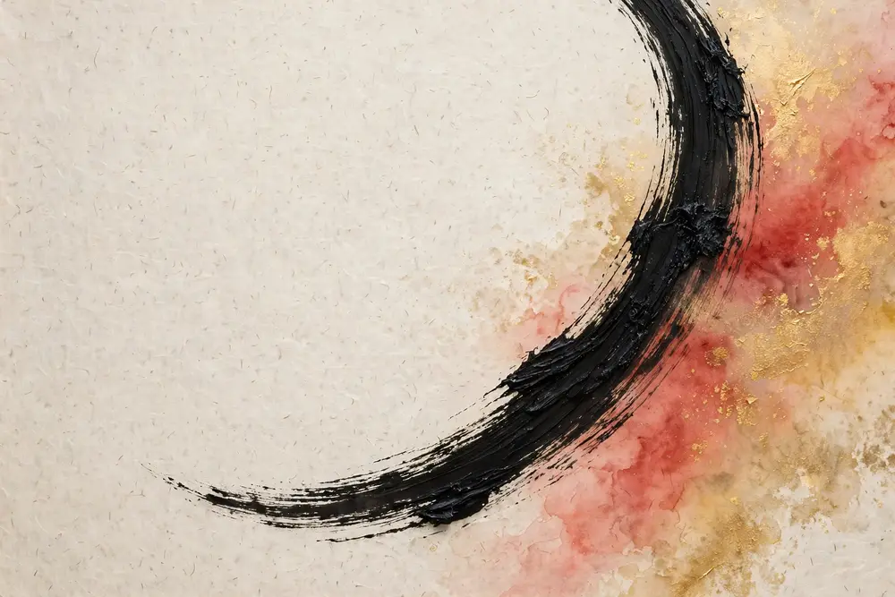
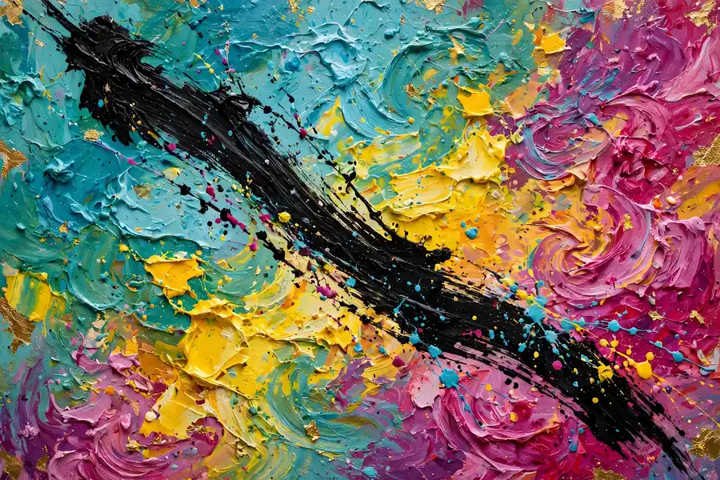
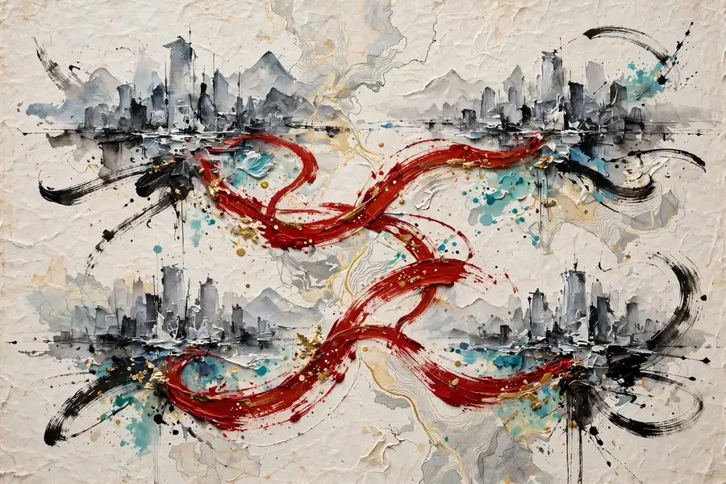
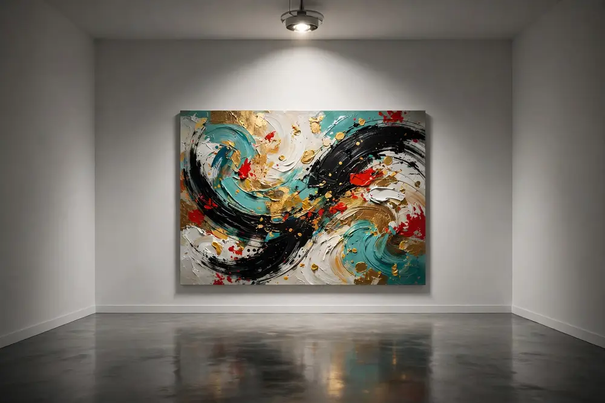

吳日勤個人品牌網頁 · 插畫指令紀錄
IMG-001 · 首屏大筆觸背景

Wide atmospheric background painting, abstract contemporary East-meets-West style: one sweeping black Chinese calligraphy brushstroke arcing across warm rice-paper white, with soft washes of vermilion red and mineral gold at the right edge, generous calm empty space on the left third, subtle paper grain texture, thick oil-paint impasto where the stroke lands. No text, no letters, no numbers, no signatures, no watermarks, no logos, no people, no recognizable faces.
IMG-002 · 毛筆落紙特寫

Extreme close-up photograph-style image of a large Chinese calligraphy brush loaded with glossy black ink just touching textured rice paper, ink blooming into the paper fibers, a second brush and a small dish of vermilion seal paste softly blurred in the background, warm natural window light, shallow depth of field, painterly and tactile. No text, no letters, no numbers, no signatures, no watermarks, no logos, no people, no recognizable faces.
IMG-003 · 東西交會

Abstract painting in one frame with a diptych feeling: left half misty ink-wash mountains in pale grey with white negative space, right half thick impasto blocks of vermilion red, cobalt blue and mineral gold; a single continuous black calligraphy brushstroke flows from the misty side into the colorful side, uniting both halves, visible palette-knife texture, contemporary East-meets-West atmosphere. No text, no letters, no numbers, no signatures, no watermarks, no logos, no people, no recognizable faces.
IMG-004 · 一次性筆觸

Abstract expressionist painting: one single bold black brushstroke sweeping diagonally across a vivid field of turquoise, magenta and lemon yellow impasto, fine paint splatter frozen mid-air along the stroke's path, energetic and joyful, thick oil paint texture, contemporary East-meets-West atmosphere. No text, no letters, no numbers, no signatures, no watermarks, no logos, no people, no recognizable faces.
IMG-005 · 窯火淬鍊

Glowing pottery kiln interior at night, round ceramic vessels silhouetted on shelves, orange fire glow from below, molten glaze colors of cobalt blue and copper red dripping down the vessel surfaces, sparks and heat shimmer, dramatic chiaroscuro, painterly, no text, no people. Style lock: abstract contemporary East-meets-West atmosphere, sweeping Chinese calligraphy brush gestures, thick oil-paint impasto texture, palette of ink black, vermilion red, mineral gold, turquoise and warm rice-paper white. No text, no letters, no numbers, no signatures, no watermarks, no logos, no recognizable human faces.
IMG-006 · 靈魂的心電圖

A single thin glowing golden line like a heartbeat ECG trace flowing horizontally across a deep dark-blue canvas, the line blooming at its peak into colorful calligraphic brushstrokes of vermilion, turquoise and gold, poetic and minimal, vast dark negative space, no text, no letters, no people. Style lock: abstract contemporary East-meets-West atmosphere, sweeping Chinese calligraphy brush gestures, thick oil-paint impasto texture, palette of ink black, vermilion red, mineral gold, turquoise and warm rice-paper white. No text, no letters, no numbers, no signatures, no watermarks, no logos, no recognizable human faces.
IMG-007 · 四城旅居

Abstract aerial map-like composition, four gestural ink city skylines in soft grey wash connected by one continuous vermilion brushstroke thread that weaves between them, small gold accents, warm rice-paper background, sense of long travel and return, no text, no letters, no people. Style lock: abstract contemporary East-meets-West atmosphere, sweeping Chinese calligraphy brush gestures, thick oil-paint impasto texture, palette of ink black, vermilion red, mineral gold, turquoise and warm rice-paper white. No text, no letters, no numbers, no signatures, no watermarks, no logos, no recognizable human faces.
IMG-008 · 展場之光

Empty white gallery interior, one large colorful abstract canvas with bold black brushstrokes hanging on a pristine white wall, a single dramatic spotlight from above, polished concrete floor with soft reflection, serene museum atmosphere, no text, no letters, no people. Style lock: abstract contemporary East-meets-West atmosphere, sweeping Chinese calligraphy brush gestures, thick oil-paint impasto texture, palette of ink black, vermilion red, mineral gold, turquoise and warm rice-paper white. No text, no letters, no numbers, no signatures, no watermarks, no logos, no recognizable human faces.